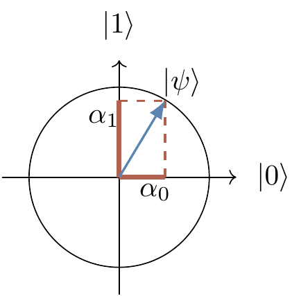
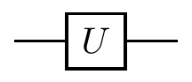
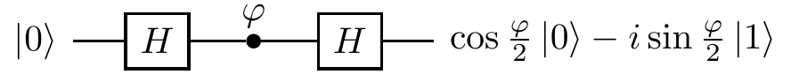
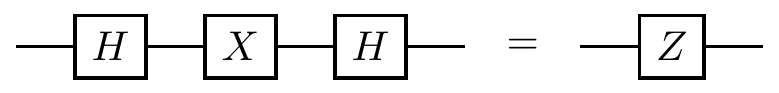
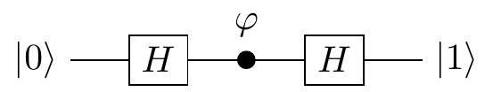

Chapter 2 Qubits
About quantum bits and quantum circuits, including the “impossible” square root of \(\texttt{NOT}\), as well as an introduction to single-qubit unitaries and rotations of the Bloch sphere, and the implications concerning universal gates.
2.1 Composing quantum operations
In order to understand something in its full complexity it is always good to start with the simplest case. Let us take a closer look at quantum interference in the simplest possible computing machine: the one that has only two distinguishable configurations — two quantum states — which we label as \(|0\rangle\) and \(|1\rangle\). We prepare the machine in some input state, usually \(|0\rangle\), and let it evolve: the machine undergoes a prescribed sequence of computational steps, each of which induces transitions between the two “computational states”, \(|0\rangle\) and \(|1\rangle\). The machine then ends in the output state \(|\psi\rangle=\alpha_0|0\rangle+\alpha_1|1\rangle\), meaning the two outputs, \(|0\rangle\) and \(|1\rangle\), are reached with probability amplitudes \(\alpha_0\) and \(\alpha_1\), respectively. In the process of computation each computational step \(U\) (also referred to as an operation) sends state \(|k\rangle\) to state \(|l\rangle\), where \(k,l=0,1\), but only with some amplitude \(U_{lk}\). We write this as \[\begin{equation} |k\rangle \mapsto \sum_l U_{lk} |l\rangle. \tag{2.1} \end{equation}\] (watch out for the order of the indices).
Thus any computational step \(U\) of this machine can be described by a matrix which tabulates all the transition amplitudes: \[ U = \begin{bmatrix} U_{00} & U_{01} \\U_{10} & U_{11} \end{bmatrix}. \] The matrix element \(U_{lk}\) represents the amplitude of transition from state \(|k\rangle\) to state \(|l\rangle\) (again, watch the order of indices). To be clear, the entries in this matrix are not any random complex numbers: their moduli squared represent transition probabilities, which in turn implies that such matrices must be unitary.22
We can also describe \(U\) by drawing a diagram, which contains exactly the same information as the matrix representation, but just in a different form:

Now how can we find some quantum interference to study? Consider two computational steps, \(U\) and \(V\). What is the amplitude that input \(|k\rangle\) will generate output \(|m\rangle\)? We have to check all computational paths leading from input \(|k\rangle\) to output \(|m\rangle\) and add the corresponding amplitudes. For example, as you can see in Figure 2.1, input \(|0\rangle\) and output \(|1\rangle\) are connected by the two computational paths: \(|0\rangle\mapsto|0\rangle\mapsto|1\rangle\) (amplitude \(V_{10}U_{00}\)) and \(|0\rangle\mapsto|1\rangle\mapsto|1\rangle\) (amplitude \(V_{11}U_{10}\)). Thus the total amplitude that input \(|0\rangle\) gives output \(|1\rangle\) is the sum \(V_{10}U_{00}+V_{11}U_{10}\), and when we take the modulus squared of this expression we will see the interference term.

Figure 2.1: The composition of two computational steps, \(U\) and \(V\), with the possible paths from \(|0\rangle\) to \(|1\rangle\) highlighted.
In general, given \(U\) and \(V\) \[ \begin{aligned} |k\rangle &\mapsto \sum_l U_{lk}|l\rangle \\|l\rangle &\mapsto \sum_m V_{ml}|m\rangle \end{aligned} \] we can compose the two operations: we first apply \(U\), and then \(V\), to obtain \[ \begin{aligned} |k\rangle &\mapsto \sum_l U_{lk} \left( \sum_m V_{ml}|m\rangle \right) \\&= \sum_m \left( \sum_l V_{ml}U_{lk} \right) |m\rangle \\&= \sum_m (VU)_{mk} |m\rangle. \end{aligned} \]
If you want to hone your quantum intuition think about it the following way. The amplitude that input \(|k\rangle\) evolves to \(|m\rangle\) via a specific intermediate state \(|l\rangle\) is given by \(V_{ml}U_{lk}\) (evolutions are independent so the amplitudes are multiplied). This done, we have to sum over all possible values of \(l\) (the transition can occur in several mutually exclusive ways so the amplitudes are added) to obtain \(\sum_l V_{ml}U_{lk}\). Thus the matrix multiplication \(VU\) (watch the order of matrices) in one swoop takes care of multiplication and addition of amplitudes corresponding to different computational paths.
2.2 Quantum bits, called “qubits”
A two-state machine that we have just described in abstract terms is usually realised as a controlled evolution of a two state system, called a quantum bit or a qubit. For example, state \(|0\rangle\) may be chosen to be the lowest energy state of an atom, the ground state, and state \(|1\rangle\) a higher energy state, the excited state. Pulses of light of appropriate frequency, duration and intensity can take the atom back and forth between the basis states \(|0\rangle\) and \(|1\rangle\) (implementing logical \(\texttt{NOT}\)).

Some other pulses, say, half the duration or intensity will take the atom into states that have no classical analogue. Such states are called coherent superpositions of \(|0\rangle\) and \(|1\rangle\), and represent a qubit in state \(|0\rangle\) with some amplitude \(\alpha_0\) and in state \(|1\rangle\) with some other amplitude \(\alpha_1\). This is conveniently represented by a state vector \[ |\psi\rangle = \alpha_0|0\rangle + \alpha_1|1\rangle \leftrightarrow \begin{bmatrix} \alpha_0 \\\alpha_1 \end{bmatrix} \]

A qubit is a quantum system in which the Boolean states \(0\) and \(1\) are represented by a prescribed pair of normalised and mutually orthogonal quantum states labelled as \(\{|0\rangle,|1\rangle\}\). The two states form a so-called computational (or standard) basis, and so any other state of an isolated qubit can be written as a coherent superposition \[ |\psi\rangle = \alpha_0|0\rangle + \alpha_1|1\rangle \] for some \(\alpha_0\) and \(\alpha_1\) such that \(|\alpha_0|^2 + |\alpha_1|^2 = 1\).
In practice, a qubit is typically a microscopic system, such as an atom, a nuclear spin, or a polarised photon.
As we have already mentioned, any23 computational step, that is, any physically admissible operation \(U\) on a qubit, is described by a \((2\times 2)\) unitary matrix \(U\). It modifies the state of the qubit as \[ |\psi\rangle \mapsto |\psi'\rangle = U|\psi\rangle \] which we can write explicitly as \[ \begin{bmatrix} \alpha'_0 \\\alpha'_1 \end{bmatrix} = \begin{bmatrix} U_{00} & U_{01} \\U_{10} & U_{11} \end{bmatrix} \begin{bmatrix} \alpha_0 \\\alpha_1 \end{bmatrix} \] That is, the operation \(U\) turns the state \(|\psi\rangle\), with components \(\alpha_k\), into the state \(|\psi'\rangle=U|\psi\rangle\), with components \(\alpha'_l= \sum_k U_{lk}\alpha_k\).
2.3 Quantum gates and circuits
Atoms, trapped ions, molecules, nuclear spins and many other quantum objects, which we call qubits, can be used to implement simple quantum interference, and hence simple quantum computation. There is no need to learn about physics behind these diverse technologies if all you want is to understand the basics of quantum computation. We may now conveniently forget about any specific experimental realisation of a qubit and just remember that any manipulations on qubits have to be performed by physically admissible operations, and that such operations are represented by unitary transformations.
A quantum (logic) gate is a device which performs a fixed unitary operation on selected qubits in a fixed period of time, and a quantum circuit is a device consisting of quantum logic gates whose computational steps are synchronised in time. The sizes of the circuit is the number of gates it contains.
Some unitary \(U\) acting on a single qubit is represented diagrammatically as

This diagram should be read from left to right. The horizontal line represents a qubit that is inertly carried from one quantum operation to another. We often call this line a quantum wire. The wire may describe translation in space (e.g. atoms travelling through cavities) or translation in time (e.g. a sequence of operations performed on a trapped ion). A sequence of two gates acting on the same qubit, say \(U\) followed by \(V\), is represented by

and is described by the matrix product \(VU\) (note the order in which we multiply the matrices).
2.4 Single qubit interference
Let me now describe what is probably the most important sequence of operations performed on a single qubit, namely a generic single qubit interference. It is typically constructed as a sequence of three elementary operations:
- the Hadamard gate
- a phase shift gate
- the Hadamard gate again.
We represent it graphically as

| Hadamard | Phase |
|---|---|
| \(H=\frac{1}{\sqrt2}\begin{bmatrix}1&1\\1&-1\end{bmatrix}\) | \(P_\varphi=\begin{bmatrix}1&0\\0&e^{i\varphi}\end{bmatrix}\) |
| \(\begin{array}{lcr}|0\rangle&\mapsto&\frac1{\sqrt{2}}(|0\rangle+|1\rangle)\\|1\rangle&\mapsto&\frac1{\sqrt{2}}(|0\rangle-|1\rangle)\end{array}\) | \(\begin{array}{lcr}|0\rangle&\mapsto&|0\rangle\\|1\rangle&\mapsto&e^{i\varphi}|1\rangle\end{array}\) |
You will see it over and over again, for it is quantum interference that gives quantum computation additional capabilities. The product of the three matrices \(HP_\varphi H\) describes the action of the whole circuit: it gives the transition amplitudes between states \(|0\rangle\) and \(|1\rangle\) at the input and the output as \[ e^{i\frac{\varphi}{2}} \begin{bmatrix} \cos\varphi/2 & -i\sin\varphi/2 \\-i\sin\varphi/2 & \cos\varphi/2 \end{bmatrix} = \frac{1}{\sqrt 2} \begin{bmatrix} 1 & 1 \\1 & -1 \end{bmatrix} \begin{bmatrix} 1 & 0 \\0 & e^{i\varphi} \end{bmatrix} \frac{1}{\sqrt 2} \begin{bmatrix} 1 & 1 \\1 & -1 \end{bmatrix} \]
Given that our input state is almost always \(|0\rangle\), it is sometimes much easier and more instructive to step through the execution of this circuit and follow the evolving state. The interference circuit effects the following sequence of transformations:24 \[ \begin{aligned} |0\rangle &\overset{H}{\longmapsto} \frac{1}{\sqrt2} \left( |0\rangle+|1\rangle \right) \\&\overset{P_\phi}{\longmapsto} \frac{1}{\sqrt2} \left( |0\rangle+e^{i\phi}|1\rangle \right) \\&\overset{H}{\longmapsto} \cos\frac{\phi}{2}|0\rangle - i\sin\frac{\phi}{2}|1\rangle. \end{aligned} \] The first Hadamard gate prepares an equally weighted superposition of \(|0\rangle\) and \(|1\rangle\) and the second one closes the interference by bringing the interfering paths together. The phase shift \(\varphi\) effectively controls the evolution and determines the output. The probabilities of finding the qubit in state \(|0\rangle\) or \(|1\rangle\) at the output are, respectively, \[ \begin{aligned} \Pr(0) &= \cos^2\frac{\phi}{2} \\\Pr(1) &= \sin^2\frac{\phi}{2}. \end{aligned} \] This simple quantum process contains, in a nutshell, the essential ingredients of quantum computation. This sequence (Hadamard – phase shift – Hadamard) will appear over and over again. It reflects a natural progression of quantum computation: first we prepare different computational paths, then we evaluate a function which effectively introduces phase shifts into different computational paths, then we bring the computational paths together at the output.
2.5 The square root of NOT
Now that we have poked our heads into the quantum world, let us see how quantum interference challenges conventional logic. Consider a following task: design a logic gate that operates on a single bit and such that when it is followed by another, identical, logic gate the output is always the negation of the input. Let us call this logic gate the square root of \(\texttt{NOT}\), or \(\sqrt{\texttt{NOT}}\).

A simple check, such as an attempt to construct a truth table, should persuade you that there is no such operation in logic. It may seem reasonable to argue that since there is no such operation in logic, \(\sqrt{\texttt{NOT}}\) is impossible. But it does exist! Experimental physicists routinely construct such “impossible” gates in their laboratories. It is a physically admissible operation described by the unitary matrix25 \[ \sqrt{\texttt{NOT}} = \frac12 \begin{bmatrix} 1+i & 1-i \\1-i&1+i \end{bmatrix} = \frac1{\sqrt2} \begin{bmatrix} e^{i\frac{\pi}{4}} & e^{-i\frac{\pi}{4}} \\e^{-i\frac{\pi}{4}} & e^{i\frac{\pi}{4}} \end{bmatrix}. \] Indeed, \[ \frac12 \begin{bmatrix} 1+i & 1-i \\1-i & 1+i \end{bmatrix} \frac12 \begin{bmatrix} 1+i & 1-i \\1-i & 1+i \end{bmatrix} = \begin{bmatrix} 0&1 \\1&0 \end{bmatrix}. \]
We could also step through the circuit diagram and follow the evolution of the state vector:

Or, if you prefer to work with column vectors and matrices, you can write the two consecutive application of \(\sqrt{\texttt{NOT}}\) to state \(|0\rangle\) as \[ \begin{bmatrix}0\\1\end{bmatrix} \,\longleftarrow\!\!\!\vert\,\, \frac{1}{\sqrt 2} \begin{bmatrix} e^{i\frac{\pi}{4}} \\e^{-i\frac{\pi}{4}} \end{bmatrix} \,\longleftarrow\!\!\!\vert\,\, \begin{bmatrix}1\\0\end{bmatrix} \] (following a well established convention, the above should be read from right to left)26, where each \(\longleftarrow\!\!\!\vert\) denotes multiplication by \(\frac1{\sqrt2}\begin{bmatrix}e^{i\frac{\pi}{4}} & e^{-i\frac{\pi}{4}}\\e^{-i\frac{\pi}{4}} & e^{i\frac{\pi}{4}}\end{bmatrix}\).
One way or another, quantum theory explains the behaviour of \(\sqrt{\texttt{NOT}}\), and so, reassured by the physical experiments27 that corroborate this theory, logicians are now entitled to propose a new logical operation \(\sqrt{\texttt{NOT}}\). Why? Because a faithful physical model for it exists in nature!
2.6 Phase gates galore
As well as the generic phase gate \(P_\varphi\), let us mention three specific phase gates that will frequently pop up (two of which have rather confusing names, at first glance!).
| Generic phase | Phase-flip | \(\pi/4\)-phase | \(\pi/8\)-phase |
|---|---|---|---|
| \(P_\varphi=\begin{bmatrix}1&0\\0&e^{i\varphi}\end{bmatrix}\) | \(Z=\begin{bmatrix}1&0\\0&-1\end{bmatrix}\) | \(S=\begin{bmatrix}1&0\\0&i\end{bmatrix}\) | \(T=\begin{bmatrix}1&0\\0&e^{i\frac{\pi}{4}}\end{bmatrix}\) |
Note that the phase gate \(P_\varphi\) is only defined up to a global phase factor28, and so we can write its matrix either as \[ P_\varphi = \begin{bmatrix} 1 & 0 \\0 & e^{i\varphi} \end{bmatrix} \] or as \[ P_\varphi = \begin{bmatrix} e^{-i\frac{\varphi}{2}} & 0 \\0 & e^{i\frac{\varphi}{2}} \end{bmatrix} \] The first version is more common in the quantum information science community, but the second one is sometimes more convenient to use, as it has determinant \(1\), and hence belongs to the group \(\mathrm{SU}(2)\). We will occasionally switch to the \(\mathrm{SU}(2)\) version of a phase gates, and this is where the \(\pi/4\)-phase and \(\pi/8\)-phase gates get their names, since their \(\mathrm{SU}(2)\) versions have \(e^{\mp i\pi/4}\) and \(e^{\mp i\pi/8}\) (respectively) on the diagonal.
The remaining gate (\(Z\)) is arguably the most important specific phase gate, since it is one of the Pauli operators, which we will now discuss.
2.7 Pauli operators
Adding to our collection of common single-qubit gates, we now look at the three Pauli operators29 \(\sigma_x\), \(\sigma_y\), and \(\sigma_z\), also denoted by \(X\), \(Y\), and \(Z\) (respectively). These three operators, combined with the identity, satisfy a lot of nice formal properties, which we shall examine briefly here, and then return to in more detail in Chapter 3.
| Identity | Bit-flip | Bit-phase-flip | Phase-flip |
|---|---|---|---|
| \(\operatorname{id}=\begin{bmatrix}1&0\\0&1\end{bmatrix}\) | \(X=\begin{bmatrix}0&1\\1&0\end{bmatrix}\) | \(Y=\begin{bmatrix}0&-i\\i&0\end{bmatrix}\) | \(Z=\begin{bmatrix}1&0\\1&-1\end{bmatrix}\) |
The identity is just a quantum wire, and we have already seen the \(X\) and \(Z\) gates in Phase gates galore, as the bit-flip and phase-flip (respectively). Note that, of these latter two, only the \(X\) gate has a classical analogue (as the logical \(\texttt{NOT}\) operator). The remaining gate, the \(Y\) operator, describes the combined effect of both the bit- and the phase-flip: \(ZX=iY\).
In fact, this is just one of the equations that the Pauli matrices satisfy. The Pauli matrices are unitary and Hermitian, they square to the identity, and they anti-commute. By this last point, we mean that \[ \begin{aligned} XY+YX&=0, \\XZ+ZX&=0, \\YZ+ZY&=0. \end{aligned} \] As already mentioned, they satisfy \(ZX=iY\), but also any cyclic permutation of this equation.
These operators are also called sigma matrices, or Pauli spin matrices. They are so ubiquitous in quantum physics that they should certainly be memorised.
2.8 From bit-flips to phase-flips, and back again
The Pauli \(Z\) gate is a special case of a phase gate \(P_\varphi\) with \(\varphi=\pi\). When we insert it into the interference circuit we obtain

If you wish to verify this, write the Hadamard gate as \(H = (X+Z)/\sqrt{2}\) and use the properties of the Pauli operators.30 So the Hadamard gate turns phase-flips into bit-flips, but it also turns bit-flips into phase-flips:

Let us also add, for completeness, that \(HYH=-Y\). You will see these identities again and again, especially when we discuss quantum error corrections.31
2.9 Any unitary operation on a single qubit
There are infinitely many unitary operations that can be performed on a single qubit. In general, any complex \((n\times n)\) matrix has \(n^2\) complex entries, and can thus be specified by \(2n^2\) real independent parameters. The unitarity constraint removes \(n^2\) of these, and so any unitary \((n\times n)\) matrix has \(n^2\) real independent parameters. In particular, we need four real parameters to specify a \((2\times 2)\) unitary matrix. If we are prepared to ignore global phase factors (which we are) then there are only three real parameters left. So, with this in mind, can we construct and implement any unitary on a single qubit in some simple way?
Yes, we can.
Any unitary operation on a qubit (up to an overall multiplicative phase factor) can be implemented by a circuit containing just two Hadamards and three phase gates, with adjustable phase settings, as in Figure 2.2.
Figure 2.2: The universal circuit for unitary \((2\times2)\) matrices.
If we multiply the matrices corresponding to each gate in the network (remember that the order of matrix multiplication is reversed) we obtain \[ U(\alpha,\beta,\gamma) =\begin{bmatrix} e^{-i\left(\frac{\alpha+\beta}{2}\right)}\cos\varphi/2 & -ie^{i\left(\frac{\alpha-\beta}{2}\right)}\sin\varphi/2 \\-ie^{-i\left(\frac{\alpha-\beta}{2}\right)}\sin\varphi/2 & e^{i\left(\frac{\alpha+\beta}{2}\right)}\cos\varphi/2 \end{bmatrix}. \] Any \((2\times 2)\) unitary matrix (up to global phase) can be expressed in this form using the three independent real parameters, \(\alpha\), \(\beta,\) and \(\varphi\), which take values in \([0,2\pi]\). In order to see that this construction does what it claims, let us explore an intriguing mathematical connection between single qubit unitaries and rotations in three dimensions.
2.10 The Bloch sphere
Unitary operations on a single qubit form a group. More precisely, the set of all \((2\times 2)\) unitary matrices forms a non-abelian group under the matrix multiplication, denoted by \(\mathrm{U}(2)\). It turns out that compositions of single qubit unitaries behave pretty much the same as compositions of rotations in three dimensions. Technically speaking, \(\mathrm{U}(2)/\mathrm{U}(1)\cong \mathrm{SO}(3)\).32 That is, \((2\times 2)\) unitaries, up to global phase, form a group which is isomorphic to the group of rotations in three dimensions, denoted by \(\mathrm{SO}(3)\). This isomorphism helps to visualise the actions of single qubit gates.
There are many ways to introduce this isomorphism. Here we will first show how to represent single-qubit state vectors in terms of Euclidean vectors in three dimensions, and then relate unitary operations on state vectors to rotations in this Euclidean space.
Any single qubit state can be written as \(|\psi\rangle=\alpha|0\rangle+\beta|1\rangle\), constrained by the relation \(|\alpha|^2+|\beta|^2=1\). This suggests a more natural parametrisation as33 \[ |\psi\rangle = \cos\frac{\theta}{2}e^{i\varphi_0}|0\rangle + \sin\frac{\theta}{2}e^{i\varphi_1}|1\rangle. \] We can then factor out a global phase: \[ |\psi\rangle = e^{i\varphi_0}\left( \cos\frac{\theta}{2}|0\rangle + \sin\frac{\theta}{2}e^{i\varphi}|1\rangle \right), \] and even remove it completely, since states that are identical up to a global phase are physically indistinguishable.
The parametrisation in terms of \(\theta\) and \(\varphi\) should remind you of spherical polar coordinates for the surface of a sphere.

Figure 2.3: The Bloch sphere, with the point \(\vec{s}\) corresponding to \(|\psi\rangle\) marked.
We call this sphere the Bloch sphere, and the unit vector \({\vec s}\) defined by \(\theta\) and \(\varphi\) the Bloch vector.34 This is a very useful way to visualise quantum states of a single qubit and unitary operations that we perform on it. Any unitary action on the state vector will induce a rotation of the corresponding Bloch vector. But what kind of rotation?
Note that any two orthogonal state vectors appear on the Bloch sphere as two Bloch vectors pointing in opposite directions. Now, the two eigenvectors of a single-qubit unitary \(U\) must be orthogonal, and thus define an axis running through the centre of the Bloch sphere. This is the axis about which the Bloch vector is rotated when \(U\) acts on the corresponding state vector. The rotation angle \(\alpha\) is given by the eigenvalues of \(U\), which, up to a global phase factor, are of the form \(e^{\mp i\alpha/2}\).
It is instructive to work out few simple cases and get a feel for the rotations corresponding to the most common unitaries. For example, it is easy to check that a phase gate \(P_\alpha\) acts by \[ \cos\frac{\theta}{2}|0\rangle + e^{i\varphi}\sin\frac{\theta}{2}|1\rangle \longmapsto \cos\frac{\theta}{2}|0\rangle + e^{i(\varphi+\alpha)}\sin\frac{\theta}{2}|1\rangle. \] The azimuthal angle changes from \(\varphi\) to \(\varphi+\alpha\), and so the Bloch sphere is rotated anticlockwise by \(\alpha\) about the \(z\)-axis. The Bloch vectors corresponding to the two eigenvectors of \(P_\alpha\), namely \(|0\rangle\) and \(|1\rangle\), define the axis of the rotation.

Figure 2.4: Phase gates \(P_\alpha\) represent rotations of the Bloch sphere around the \(z\)-axis.
As previously mentioned, the Pauli operator \(Z=\sigma_z\) is a special case of a phase gate, and represents rotation by \({180}^{\circ}\) (that is, \(\pi\) radians), about the \(z\)-axis. You can also verify that \(X=\sigma_x\), with eigenvectors \({(|0\rangle\pm|1\rangle)/\sqrt{2}}\), represents rotation by \({180}^{\circ}\) about the \(x\)-axis, and \(Y=\sigma_y\), with eigenvectors \({(|0\rangle\pm i|1\rangle)/\sqrt{2}}\), represents rotation by \({180}^{\circ}\) about the \(y\)-axis.
How about the Hadamard gate? Like the Pauli operators, it squares to the identity (\(H^2=\operatorname{id}\)), which implies that its eigenvalues are \(\pm 1\). Thus it will correspond to a rotation by \({180}^{\circ}\). But about which axis? This time, rather than finding eigenvectors of \(H\), we notice that \(HXH=Z\) and \(HZH=X\), thus \(H\) must swap \(x\)- and \(z\)-axes, turning rotations about the \(z\)-axis into rotations about the \(x\)-axis, and vice versa. The Hadamard gate must then represent rotation by \({180}^{\circ}\) about the diagonal \((x+z)\)-axis. You may also notice that, after this rotation, the \(y\)-axis points in the opposite direction, which seems to be related to another identity: \(HYH=-Y\). This is not a coincidence.
One can show35 that the effect of the rotation represented by unitary \(U\) on the Bloch vector with components \(s_x\), \(s_y\), \(s_z\) is summarised in the formula \[ U (s_x X + s_y Y + s_z Z) U^\dagger = s'_x X+ s'_y Y + s'_z Z, \] where \(s'_x\), \(s'_y\), and \(s'_z\) are the components of the rotated Bloch vector.
2.11 Composition of rotations
We are now in a position understand the circuit in Figure 2.2 in geometric terms. Recall that any rotation in the Euclidean space can be performed as a sequence of three rotations: one about the \(z\)-axis, one about the \(x\)-axis, and one more about \(z\)-axis. The circuit does exactly this:

The first phase gate effects rotation by \(\alpha\) about the \(z\)-axis, the second phase gate is sandwiched between the two Hadamard gates, and these three gates together effect rotation by \(\varphi\) about the \(x\)-axis, and, finally, the third phase gates effects rotation by \(\beta\) about the \(z\)-axis. So we can implement any unitary \(U\) by choosing the three phase shifts, \(\alpha\), \(\varphi\), and \(\beta\), which are known as the three Euler’s angles.
2.12 A finite set of universal gates
The Hadamard gate and the phase gates, with adjustable phases, allow us to implement an arbitrary single-qubit unitary exactly. The tacit assumption here is that we have here infinitely many phase gates: one gate for each phase. In fact, we can pick just one phase gate, namely any phase gate \(P_\alpha\) with the phase \(\alpha\) that is incommensurate36 with \(\pi\). It is clear that repeated iteration of \(P_\alpha\) can be used to approximate any other phase gate to arbitrary accuracy: indeed, rotate the Bloch sphere by \(\alpha\) about the \(z\)-axis sufficiently many times and you end up as close as you please to any other rotation about the \(z\)-axis.
If you want to be \(\epsilon\)-close to the desired angle of rotation, then you may need to repeat the rotation by \(\alpha\) roughly \(1/\epsilon\) times. Indeed, within \(n\) applications (for \(n\alpha\gg 2\pi\)) of \(P_\alpha\), we expect the accessible angles to be approximately evenly distributed within the range \([0,2\pi]\), i.e. any angle of rotation can be achieved to an accuracy of \(\epsilon=2\pi/n\) by using up to \(n\approx 1/\epsilon\) applications of \(P_\alpha\). So we can use just one phase gate to approximate the three phase gates in the circuit in Figure 2.2.
There are other ways of implementing irrational rotations of the Bloch sphere. For example, take the Hadamard gate and the \(T\) gate. You can check that the compositions \(THTH\) and \(HTHT\) represent rotations by angles which are irrational multiples of \(\pi\), about two different axes. We can then compose a sequence of these two rotations to approximate any other rotation of the sphere. This may look very nice in theory, but there are issues with the actual physical implementation of this approach. All the gates in the circuit will operate with finite precision, and the phase gates will deviate from implementing the required irrational rotations. It turns out, however, that we can tolerate minor imperfections; the final result will not be that far off.
For more details on all the above, see Chapter 3.
2.13 Exercises
Consider the usual quantum interference circuit  Suppose you can control the input of the circuit and measure the output, but you do not know the phase shift \(\varphi\) introduced by the phase gate. You prepare input \(|0\rangle\) and register output \(|1\rangle\). What can you say about \(\varphi\)?
Now you are promised that \(\varphi\) is either \(0\) or \(\pi\). You can run the circuit only once to find out which of the two phases was chosen. Can you do that?
Derive the identity \[ (\vec{a}\cdot\vec{\sigma})(\vec{b}\cdot\vec{\sigma}) = (\vec{a}\cdot\vec{b})\operatorname{id}+ i(\vec{a}\times \vec{b})\cdot \vec{\sigma}. \] (All you need here are the Pauli matrices’ commutation and anti-commutation relations, but it is instructive to derive the identity using the component notation, and below we give a sketch of how such a derivation would go.)
First, notice that the products of Pauli matrices can be written succinctly as \[ \sigma_{i}\sigma_{j} = \delta _{ij}\operatorname{id}+ i\varepsilon_{ijk}\,\sigma _{k}, \] where \(\delta_{ij}\) is the Kronecker delta and \(\varepsilon_{ijk}\) is the Levi-Civita symbol: \[ \varepsilon_{ijk} = \begin{cases} +1 & {\text{if }}(i,j,k){\text{ is }}(1,2,3)\text{, }(2,3,1){\text{, or }}(3,1,2) \\-1 & {\text{if }}(i,j,k){\text{ is }}(3,2,1)\text{, }(1,3,2){\text{, or }}(2,1,3) \\\;\;\;0 & {\text{if }}i=j,{\text{ or }}j=k,{\text{ or }}k=i \end{cases} \] That is, \(\varepsilon _{ijk}\) is \(1\) if \((i, j, k)\) is an even permutation of \((1, 2, 3)\), it is \(-1\) if it is an odd permutation, and it is \(0\) if any index is repeated. The Levi-Civita symbol is anti-symmetric, meaning when any two indices are changed, its sign alternates. Then recall that the scalar (dot) product and vector (cross) product of two Euclidean vectors \(\vec{a}\) and \(\vec{b}\) can be written, in terms of the components, as \[ \begin{aligned} \vec{a}\cdot\vec{b} &= \sum_{i=1}^3 a_i b_i \\(\vec{a}\times\vec{b})_i &= \sum_{j,k=1}^3 \varepsilon_{ijk}a_jb_k. \end{aligned} \] The rest is rather straightforward: \[ (\vec{a}\cdot\vec{\sigma})(\vec{b}\cdot\vec{\sigma}) = \sum_{ij}a_i b_j\sigma_i\sigma_j = \ldots. \]
Recall that matrix \(U\) is called unitary if \[U^\dagger U = UU^\dagger = \operatorname{id}\] where the adjoint or Hermitian conjugate \(U^\dagger\) of any matrix \(U\) with complex entries \(U_{ij}\) is obtained by taking the complex conjugate of every element in the matrix and then interchanging rows and columns (\(U^\dagger_{kl}= U^\star_{lk}\)).↩︎
Here we are talking about isolated systems. As you will soon learn, a larger class of physically admissible operations is described by completely positive maps. It may sound awfully complicated but, as you will soon see, it is actually very simple.↩︎
We ignore the global phase factor \(e^{i\frac{\varphi}{2}}\).↩︎
There are infinitely many unitary operations that act as the square root of \(\texttt{NOT}\).↩︎
Just remember that circuits diagrams are read from left to right, and vector and matrix operations go from right to left.↩︎
We discuss this in more detail in [Appendix: Physics against logic, via beamsplitters].↩︎
In general, states differing only by a global phase are physically indistinguishable, and so it is physical experimentation that leads us to this mathematical choice of only defining things up to a global phase.↩︎
We use the standard basis \(\{|0\rangle,|1\rangle\}\) most of the time, and so often refer to operators as matrices.↩︎
\(\begin{aligned}HXH &= Z\\HZH &= X\\HYH &= -Y\end{aligned}\)↩︎
Unitaries, such as \(H\), that take the three Pauli operators to the Pauli operators via conjugation form the so-called Clifford group, which we will meet later on. Which phase gate is in the Clifford group of a single qubit?↩︎
Note that \(\mathrm{U}(1)\cong\mathbb{C}^\times\), where \(\mathbb{C}^\times\) is the multiplicative group of unit elements of the complex numbers, i.e. the set \(\mathbb{C}\setminus\{0\}\) with the group operation given by multiplication.↩︎
There is a good reason to use \(\theta/2\) instead of \(\theta\), which we will explain later on.↩︎
We will revisit this construction again in more detail, and from a slightly different point of view, in Chapter 3.↩︎
That is, there do not exist any \(m,n\in\mathbb{Z}\) such that \(m\alpha=n\pi\). For example, it suffices to take \(\alpha\) to be rational.↩︎